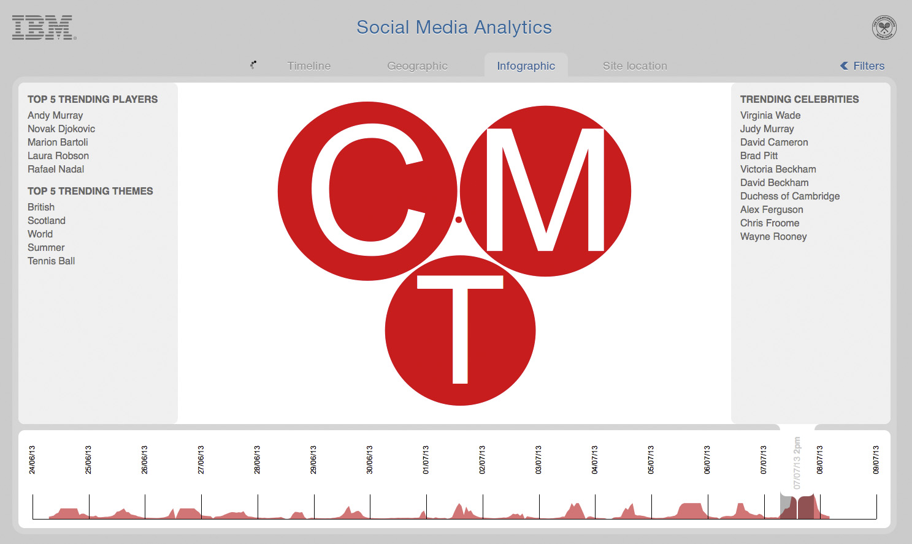
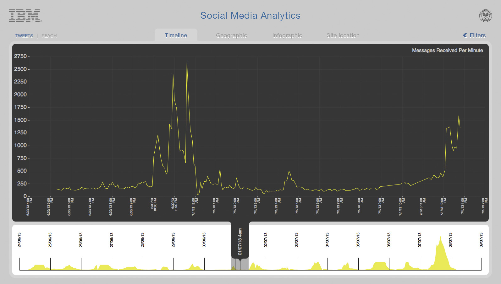
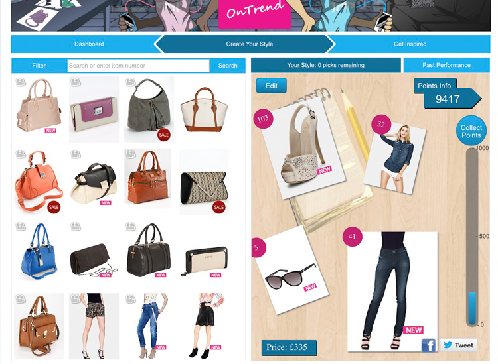
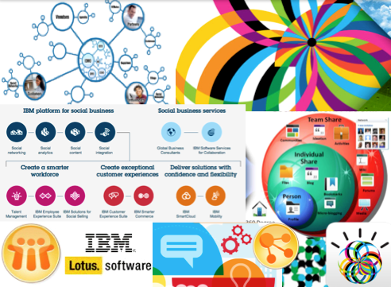
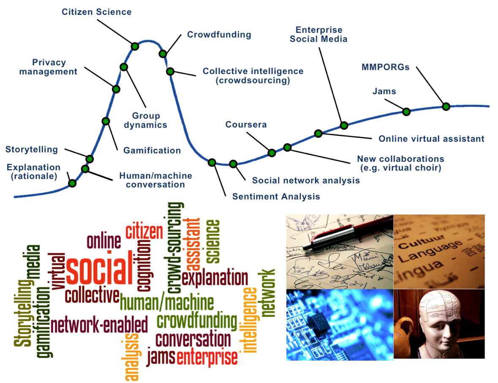
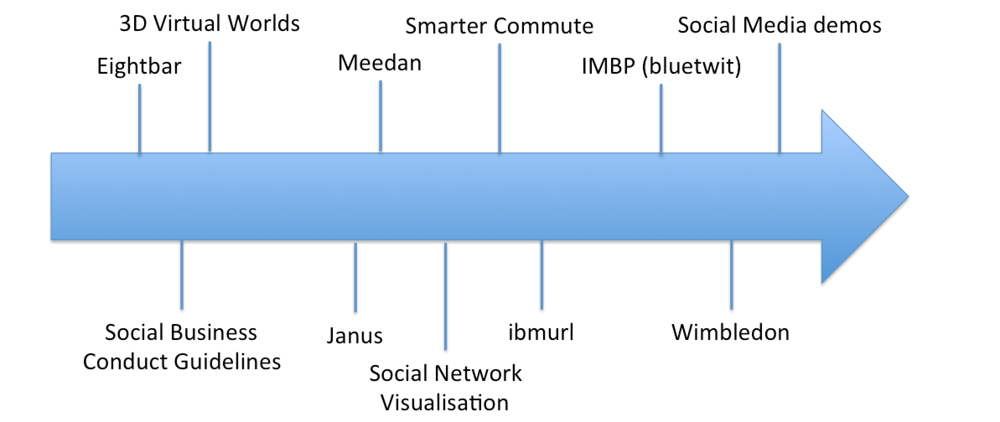
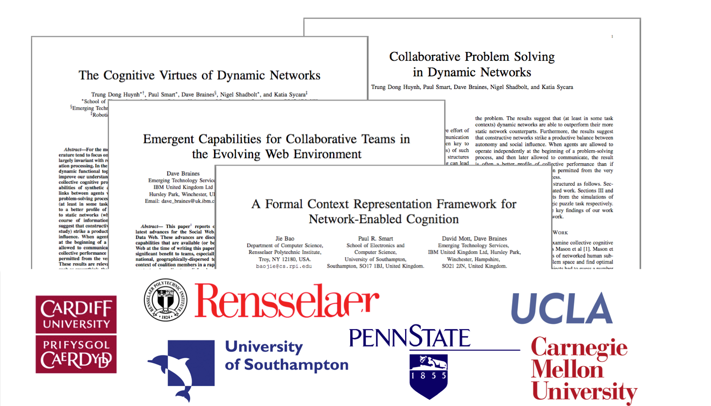
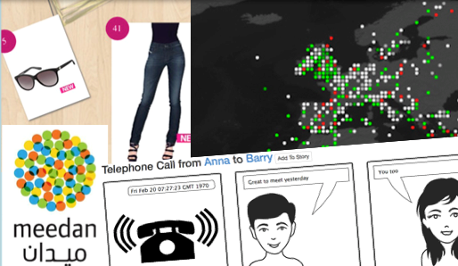

The IBM Social Business Vision
“It's people who create value for your business”
What is Social Business?
Social Business is about people and their activities, with technology in a
supporting role to enable interactions. Use cases for improved customer experience,
increased productivity and innovation as well as employee satisfaction, retention and
recruiting are all key examples. IBM has a strong product
portfolio and is ranked highly by industry analysts in the Social Business and Social
Software space.
[ focus ]
[ links ]
IBM's transformation into a Social Business
“There's a big difference between Social Networking and Social Business. It's one thing to
create networks of customers, employees or partners - it's quite another to change the
processes that run your business, to make them truly social”
- Mike Rhodin, Senior Vice President, IBM
[ read more ]
The vision
“In a social enterprise, your value is established not by how much knowledge you amass, but
by how much knowledge you impart to others. This isn't just a change in tools. It's a
change in mindset and organizational culture”
- Ginni Rometty, Council on Foreign Relations speech March 2013
{kind=link}
{kind=link}
{kind=link}
{kind=link}
{kind=link}
{kind=link}
IBM Social Business Links
These are the key links to IBM Social Business Content:
- Main Social Business Page
- Smarter Planet - Social Business
- IBM SmartCloud for Social Business
- Patterns in achieving Social Business success
- Social Business Category Community (w3)
- IBM Research Center for Social Business
- Infographic: How IBM is empowering people to drive innovation
- Event: IBM Connect 2014
- IBM Social Software
- On Twitter: @ibmsocialbiz
There's also a lot of positive press about IBM's Social Business activities at the moment:
IBM's Social Business Transformation
The journey so far
{kind=link}
{kind=link}
Key elements
- Secure: Practicing secure computing - building trust by taking personal responsibility to secure IBM, our clients and colleagues
- Social: Collaborating via social computing to pioneer intellectual captial and drive innovation that matters for our clients and the world
- Smart: Being IBMers at our best - building and sharing insight and expertise, and exercising good judgment to take the right actions
Read more:
Emerging Technology
New ways of working and rich collaborative technologies are driving new levels of idea generation, collaboration and communication.
What are we doing in this area
{kind=link}
Social Business is much more than just Social Media! In Emerging Technology Services we
are very interested in the human behaviour and psychology aspects of Social Business and
how techniques arising from an understanding of these might be used to improve the user
experience to drive better business outcomes.
We look to the IBM product portfolio, research assets and open source for key capabilities
in delivering a Social Business solution. We often apply complex analytic solutions to
existing Social Media sources but we also realise that it is not enough to stop there!
There are
many great examples
of powerful social behaviour on the web, and
lots of research and experimentation into new ideas and approaches which we apply in project
engagements when appropriate. We also engage in
some funded research
of our own.
[
more links
]
Example: Gamification
Gamification is the application of game-playing mentality in non-game contexts and experimenting with what game mechanics most appeal in different situations. Gamification is more that just badges and points and a deep understanding of the business problem, the desired behaviour and the user motivations means that a good gamification solution requires design, experimentation, time and effort. The Trendification project is a good example of this in action.
Emerging Technology - Links
We are also following the activities of the w3c Social Business Community Group
This page will be updated to contain more links relevant to Emerging Technology
Our History
The Emerging Technology team has been in the area of Social Business for at least a decade. We contributed to the original Social Media Guidelines as part of the crowd-sourcing activity that defined them from active members across IBM. Team members from Emerging Technology also created eightbar which was (and still is) a public-facing blog about the activities of the team, interesting projects and technology and other Hursley-related items.
“Although there are lots of cool people and projects going on in Hursley, we never really let anyone know about them. So, we decided to try and record some of the stuff that goes on here in an unofficial blog: eightbar.”
These are some of the other Social Business items we've been involved with:
- IBM Social Computing Guidelines
- Meedan - Real-time English/Arabic translation of micro-blogging messages (pre-dating Twitter)
- ibmUrl - internal URL shortener
- Smarter Commute (Previously known as “I'm a bus”)
- IMBP - IBM Micro-Blogging Platform (Sometimes called “bluetwit”)
- 3D Virtual Worlds - mainly SecondLife which gained attention all the way to CEO (Sam Palmisano) level
- Janus - Facebook-like interface for visualising data
- Wimbledon project
- Trendification project
Our Research
Since 2006 members of the Emerging Technology team have been client-funded to carry out fundamental research under the International Technology Alliance (ITA) research program. Some aspects of this research apply to Social Business and selected papers are listed below along with a list of the key topic areas and collaborators on these topics. This work is funded by the UK Ministry of Defence (DSTL) and the US Army Research Laboratories (ARL). This research is funded to continue until May 2016.
Topics
- Network-Enabled Cognition
- Collective Intelligence
- Shared Situation Awareness
Selected papers relevant to Social Business
Project: Wimbledon 2013
The context
{kind=link}
Wimbledon is one of the great social events of the British Summer calendar. It’s become more than just a tournament taking place in London, its now a global event with millions of tennis fans around in conversation as it takes place. One aspiration for Wimbledon 2013 was to connect the people and conversations happening on site with those taking place on social networks around the world.
What we did
During the two weeks we used IBM text analytics technology to parse over 6 million social media messages, peaking at a rate of 400/second during the men’s final. Using natural language processing we were able to analyse geography, sentiment and the topics of conversation, giving a picture of what people in different location were talking about, which players they were supporting and which celebrities had taken their interest.
{kind=link}
Visualising the conversation
{kind=link}
To show the data we built a set of visualisations, showing the volume of messages and their reach, where they were coming from, the rate at which they were coming in and what topic they were about. These visualisations were used on site at Wimbledon to let people visiting the event get a sense of what the world outside was saying.
{kind=link}
Project: Trendification
The context
Gamification is the application of game-playing mentality in non-game contexts, in order to increase the interest in an area or activity for a community of users. Different techniques that appeal to the human desire for achievement, progress, success and competition can be used in a surprisingly wide range of business contexts. This client was interested in experimenting with these ideas to clothing items in their cataologue in the form of a game based on predicting the popularity of items and competing against other players.
What we did
{kind=link}
We worked with four interns on IBM’s Extreme Blue programme to produce a gamification prototype for the fashion retail brand Very. The concept we developed was perhaps best described as “fantasy football for fashion”. The idea was that Very’s customers could browse the online store and add items to their collection to produce a style they thought would be on trend. Using real time analysis of website hits, sales data and social media sentiment each collection was awarded points to decide how fashionable their collection was.
The solution
Customers could enter different competitions, either amongst their friends or everyone to see how their fashion picks compared, competing to be Very’s top fashionista. As well as encouraging customer engagement and exposing more of Very’s products to their customers, the game provided valuable data, indicating which items might be popular in the future with their customers. This information could be used by the retailer’s fashion buyers to help decide which product lines or styles to stock.
{kind=link}
Project: Storytelling
Telling stories
Organising complex information around the structure of a story can be a useful concept as any bit of information can be included in a story. It’s also a concept that everyone is familiar with, making it easy to share and explain the ideas.
At the base level, any element can be added to a story in a text form. Some additional elements, however, are better displayed in a graphical form, a map, for example. Our stories can be made up of text and graphical elements. It’s something more like a magazine article than a novel.
Comic strips
{kind=link}
When visualising information there are lots of familiar ways like maps, network diagrams and charts. When it comes to rendering language elements and more complex conceptual information such as a conversation we felt that a comic-strip style of rendering may be an interesting approach.
Using this approach you can quickly get to the different layers of information, who said what, when it happened etc. All the information is there, but you can just get to the bits you’re interested in. We are planning to take this further and create much richer graphics, with more layers. If we knew that one person was calling from an airport, for example, we might have a graphic of an airport in the background. Based on the tone of voice we could adapt the speech bubble or the characters expression, it’s all about layering in information. We also believe this representation could be used for other data types: meetings, emails, social media etc.
Project: Storytelling - Videos
The various videos listed below show different stages of the story composition that were explored during this small experimental project.
- Video 1: Searching
- Video 2: Map-based information
- Video 3: Create a story
- Video 4: Looking at flights
- Video 5: Possible target
- Video 6: Telephone call
- Video 7: Review the story
- Video 8: Looking at Eric
Project: Context-Aware Personal Envt
The context
We are all used to dealing with a myriad of electronic information in our lives: email, calendar, contacts, social media, bookmarks, images and other media. We use different tools for each of these and in our heads we carry a model of the real-world things that we really care about: People, events, activities etc.
Can we create an environment that will easily consume this information and allow us to apply it all into the context of these higher level concepts that we actually care about?
The solution
By using the Controlled English research from the International Technology Alliance we have been able to demonstrate an environment that can easily federate data from numerous sources: Lotus Notes (email and calendar), ICM Connections (activities), Sametime (instant messages), BluePages (contacts), Twitter, Newsfeeds, browser history, images, publications and others. In addition to this the user can easily create higher level concepts such as people and projects and align these data sources to these concepts enabling a person-wide view of interactions, or a project specific list of relevant items. The Controlled English implementation also enables a human-friendly information format which the end user can make use of to create new knowledge or new models. The ability to define and run rules allows the user to infer new information where appropriate, and the potential for sharing common models and rules is possible and may be investigated in future research.
The current capability is highly experimental but shows the potential of this kind of flexible and extensible approach and we hope to develop this further.
Inspirations
There are many great examples of Social Business on the web and we draw inspiration from these. Some of the main examples are listed below but there are many more examples like this. We want to draw attention to the wide variety of social activities that are already supported so we've not listed some of the social media examples here, but they are valid too, e.g. : Twitter, Facebook, Google, Flick, YouTube etc
Open Source software development - It's the team-working, code-contribution and development processes that are of most interest to us when it comes to open source software.
Kickstarter - A global crowd-funding platform, enabling people to define and socialise their projects, soliciting investment from the community.
Zooniverse - Citizen Science platform that supports multiple classification projects for a number of communities. This platform has grown out of the original highly-successful Galaxy Zoo project.
Wikipedia - Large user-contributed internet encylopedia based on open contributions and free access. Wide-ranging content is available in multiple languages.

Jelly - A picture-based mobile question and answer application. The highly specialised nature of this app and associated community allows for a very specific and tailored user experience.
Social Media Analytics
Social Media
This rich source of information can be used for many purposes but getting highly relevant insight and information can be challenging, especially when you want to change the focus of the information processing quickly as new ideas emerge or areas of interest appear.
Analytics
The Emerging Technology team have good experience in Social Media analytics, sentiment analysis and entity detection but we are especially interested in how these techniques can be quickly adapted by non-technical business users without the need for deep technical skills, complex tooling and processes. This is an ongoing area of interest for us and relates well to our ongoing research into language technologies.
You can read about IBM Social Media Analytics here and here
Our projects
Please feel free to visit the Big Data and Analytics stand to get full details of our extensive history and projects in this area.
Two examples of projects that feature Social Media Analytics with a Social Business perspective are Wimbledon 2013 and Trendification.
Help
You can navigate through this site using the arrow keys or space bar to move between slides. There are also various 'hotkeys' setup to jump to a specific slide:
- o = overview
- s = social business
- i = ibm story
- e = emerging technology
- p = projects
- ? = help
In order to view this site you need a browser that supports HTML5. Chrome, Safari or Firefox are best.
This has been implemented using the Impress JS open source javascript library
IBM Vision
Emerging Technology
Inspirations
“Harnessing the power of people and technology”
Our History
Our Research
Our Projects
